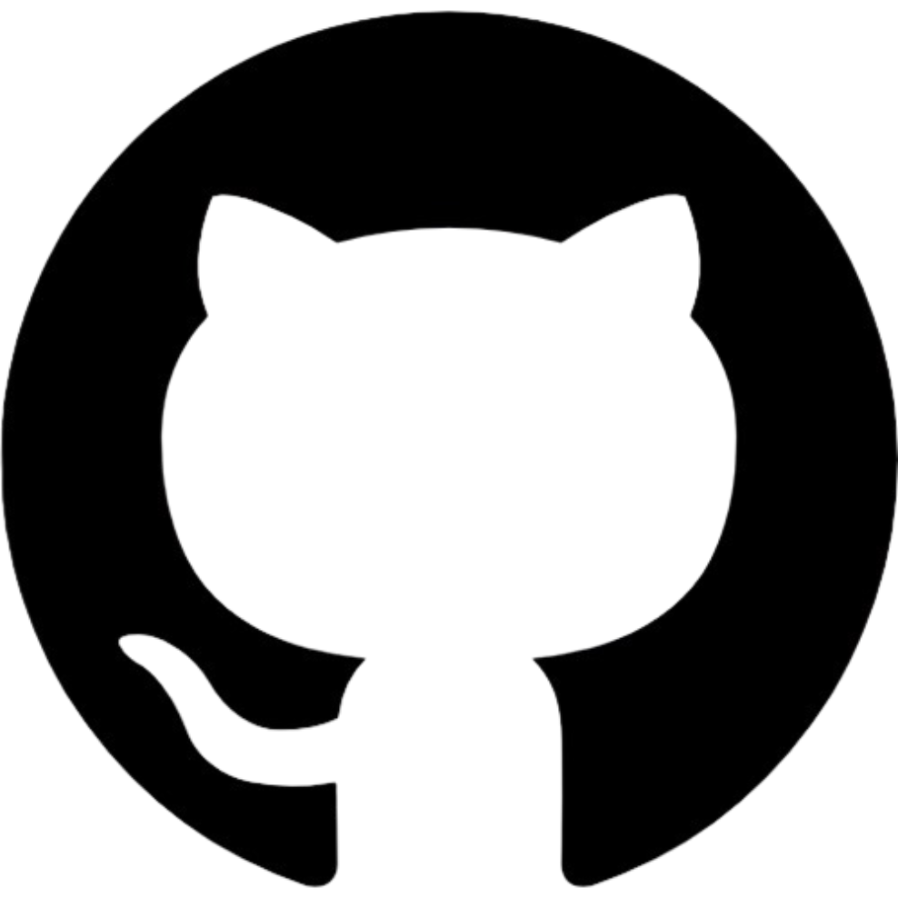

Hi! I am Aastha
I'm driven by an insatiable curiosity and a passion for leveraging technology to solve complex problems and create innovative solutions that can transform the way we live and interact with the world.
About
I am 19 years old, currently in Texas. My fascination with computers and coding began in 5th grade, planting a seed of curiosity that has blossomed into a full-fledged passion. While those early years exposed me to the world of technology, it was in 10th grade that my interest truly exploded. This newfound passion fueled my decision to pursue a computer science degree at The University of Texas at Dallas.
My journey doesn't stop at the classroom. I'm a firm believer in continuous learning, and alongside my university studies, I'm actively pursuing certifications in cybersecurity and front-end development. These certifications not only enhance my skillset but also demonstrate my dedication to staying ahead of the curve. My ultimate goal is to delve deeper into back-end development, and I'm already setting my sights on the necessary learning and certifications to achieve this. Consistency is key, and it's what's propelling me forward on this exciting path.
To further fuel my learning and gain valuable industry experience, I'm actively seeking an internship opportunity. I'm eager to contribute my skills and knowledge to a collaborative and innovative environment, and I'm a fast learner who thrives in a challenging atmosphere.
Education
University Of Texas at Dallas
B.S. Computer Science
August 2023 - May 2027
Klein Cain High School
High School Deg.
January 2020 - May 2023
Skills
Python
C++
Html
CSS
SQL
Network Security
Network Analyzer (sniffing) tools
Vulnerability assessment
Penetration testing
Risk Management Framework
Communication
Team work
Leadership
Problem solving
Critical-Thinking
MacOS
Windows
Linux
Certifications
Google Cybersecurity Certificate
Coursera Certified
Foundations of Cybersecurity, Play it safe: manage security risk, Connect and Protect: Networks and network security, Tools of the trade: Linux and SQL, Assets, Threats, and Vulnerabilities, Sound the alarm: Detection and Response, Automate cybersecurity tasks with Python
Projects
Animal Guessing Game
 🔗
Language: C++
The Animal Guessing Game is an interactive program where computer guesses animals chosen by user by asking questions. It dynamically learns from player responses, adapting its guesses and adding new animals/questions. With each round, players engage in decision-making, making it fun and educational.
Movie Search Puzzle
🔗
Language: C++
The following game takes in the .txt file as input that contains the matrix and list of movies and displays - the matrix (the puzzle), movies found from the list along with the location in the matrix and lists movies not found.